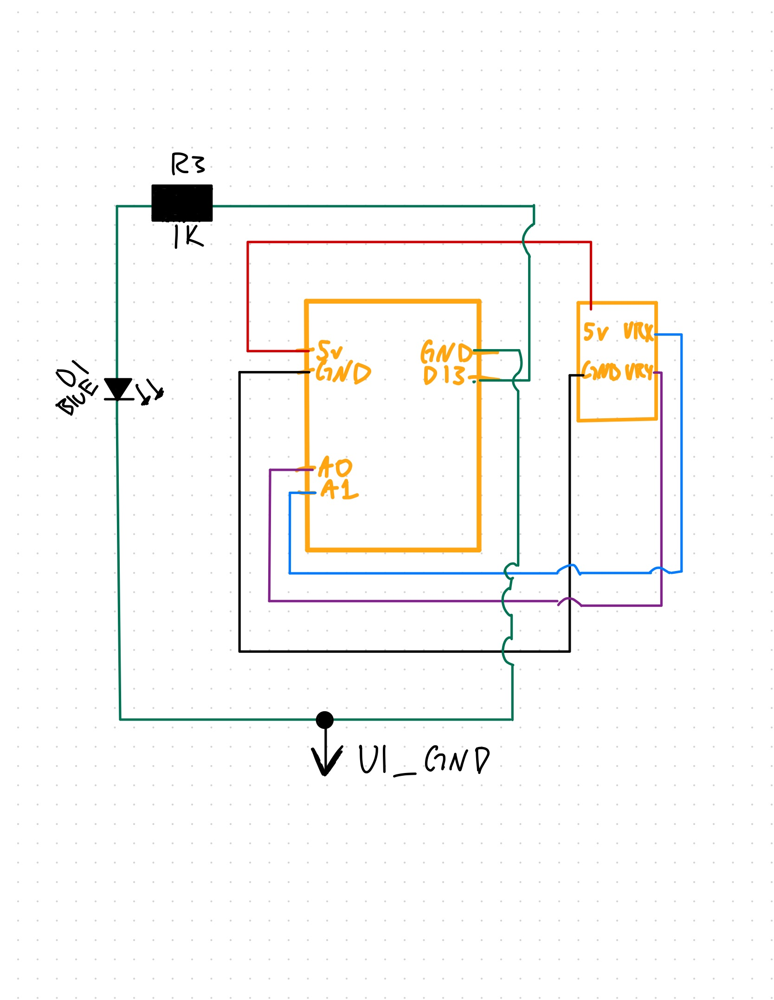
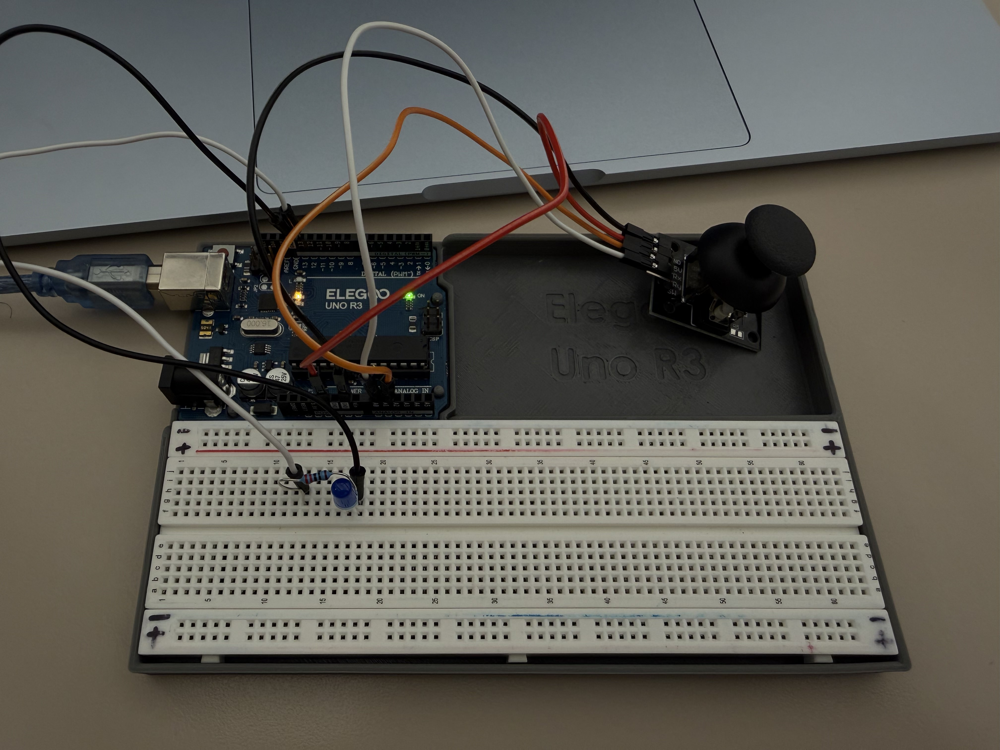

A6: Talking to the Web: Joystick + LED
Click "Connect to Arduino" to start.
Click "Connect to Arduino" to start.
For this assignment, I created an interactive webpage using p5.js and WebSerial that communicates with my Arduino in real time. The Arduino reads two inputs from the joystick (X and Y axes) and sends these values to the webpage, which updates the position of a circle based on the joystick's direction. The Arduino also controls an LED output whenever the joystick is moved outside the centered deadzone, the LED turns on. When the joystick returns to rest, the LED turns off.
This satisfies the assignment requirements: the webpage updates based on input from the Arduino, and the Arduino responds to real-world input from the joystick. The joystick supplies two inputs (X and Y), and the LED serves as the output device. This project integrates custom p5.js interaction, WebSerial communication, and physical computing.
This schematic shows the wiring layout for the joystick module and LED connected to the Arduino.
This GIF demonstrates the joystick controlling the circle on the webpage, and the LED turning on whenever the joystick moves outside the deadzone.

This image shows the physical joystick + LED circuit connected to my Arduino for Assignment 6.
This firmware reads joystick values from A0 and A1 and turns the LED on pin 13 on or off based on movement. It also sends the X and Y readings to the webpage using Serial.
// Define which analog pin is connected to the joystick X axis
#define VRX_PIN A1
// Define which analog pin is connected to the joystick Y axis
#define VRY_PIN A0
// Define which digital pin is connected to the LED (through a resistor)
#define LED_PIN 13
// Create a variable to store the joystick X axis reading
int xValue = 0;
// Create a variable to store the joystick Y axis reading
int yValue = 0;
// Deadzone around center to prevent LED flickering (tune this)
const int DEADZONE = 40;
// This function runs once when the Arduino is powered or reset
void setup() {
// Start serial communication at 9600 baud so we can talk to the web page
Serial.begin(9600);
// Set the LED pin as an OUTPUT so we can turn it on and off
pinMode(LED_PIN, OUTPUT);
// Make sure the LED starts in the OFF state
digitalWrite(LED_PIN, LOW);
}
// This function runs repeatedly after setup() finishes
void loop() {
// Read the current joystick X axis value from the analog pin
xValue = analogRead(VRX_PIN);
// Read the current joystick Y axis value from the analog pin
yValue = analogRead(VRY_PIN);
// Send the X and Y values over serial for the webpage
Serial.print(xValue);
Serial.print(",");
Serial.println(yValue);
// --- Detect joystick movement ---
bool movingX = abs(xValue - 512) > DEADZONE;
bool movingY = abs(yValue - 512) > DEADZONE;
// If either axis is outside the deadzone, the joystick is moving
if (movingX || movingY) {
digitalWrite(LED_PIN, HIGH); // LED ON
} else {
digitalWrite(LED_PIN, LOW); // LED OFF
}
// Small delay so serial isn't spammed too hard
delay(20);
}
This JavaScript code receives joystick readings from the Arduino using WebSerial and maps them to a moving circle on the canvas.
const BAUD_RATE = 9600;
let port, connectBtn; // Declare global variables
// Store joystick X value and mapped circle X position
let joyX = 512; // raw joystick reading (0–1023)
let circleX = 25; // circle's x position on the canvas
let joyY = 512; // raw joystick Y reading
let circleY = 25; // circle's y position on the canvas
function setup() {
setupSerial(); // Run serial setup function (below)
// Create a canvas
createCanvas(1700, 600);
// Use HSB color mode
colorMode(HSB);
// Text settings
textFont("system-ui", 20);
textAlign(CENTER, CENTER);
}
function draw() {
// Check whether the port is open
const portIsOpen = checkPort();
if (!portIsOpen) return;
// Read from the port until the newline character
let str = port.readUntil("\n");
// If data is received, parse it
if (str.length > 0) {
str = str.trim();
let parts = str.split(",");
if (parts.length >= 2) {
let xRaw = int(parts[0]);
let yRaw = int(parts[1]);
if (!isNaN(xRaw)) joyX = xRaw;
if (!isNaN(yRaw)) joyY = yRaw;
}
}
// Map joystick values to canvas coordinates
circleX = map(joyX, 0, 1023, -120, width + 120);
circleY = map(joyY, 0, 1023, -120, height + 120);
// Keep the circle inside the canvas
circleX = constrain(circleX, 25, width - 25);
circleY = constrain(circleY, 25, height - 25);
// Draw
background(0);
fill((circleX / 3) % 360, 90, 90);
circle(circleX, circleY, 50);
fill(255);
text(`Joystick X: ${joyX}`, width / 2, 40);
text(`Circle X: ${int(circleX)}`, width / 2, 70);
text(`Joystick Y: ${joyY}`, width / 2, 100);
text(`Circle Y: ${int(circleY)}`, width / 2, 130);
}
function setupSerial() {
port = createSerial();
let usedPorts = usedSerialPorts();
if (usedPorts.length > 0) {
port.open(usedPorts[0], BAUD_RATE);
}
connectBtn = createButton("Connect to Arduino");
connectBtn.position(5, 5);
connectBtn.mouseClicked(onConnectButtonClicked);
}
function checkPort() {
if (!port.opened()) {
connectBtn.html("Connect to Arduino");
background("gray");
return false;
} else {
connectBtn.html("Disconnect");
return true;
}
}
function onConnectButtonClicked() {
if (!port.opened()) {
port.open(BAUD_RATE);
} else {
port.close();
}
}